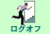

WebMagic へ接続するための画面です。
ユーザーのパソコンで Web ブラウザを立ち上げ、 WebMagic の URL を指定します。 [1]
表示されたログオン画面にて、「ログオン ID」,「パスワード」,「グループ ID」を入力します。 [2] [3]
Note
大文字と小文字は区別されます。
ログオンをクリックします。
次のような画面が表示されたら、ログオン成功です。
メニューの  をクリックすると、ログオフできます。
ブラウザを ☓ ボタンで閉じてもログオフされません。
脚注
1. はじめに
2. アドレス帳
Enter search terms or a module, class or function name.